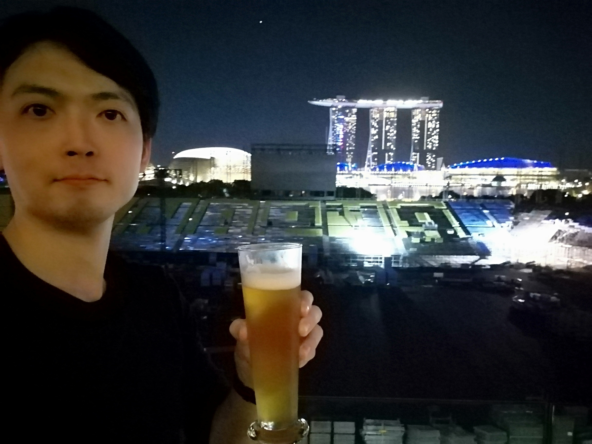

Kanda TravelCite
2018年に突如として海外渡航に目覚め、その後およそ2年間で16か国に渡航したアグレッシブな記録だってばよ！
Cebu
Philippines
2018年5月
とにかく綺麗な海が見たくて行ってみた。セブ島の南にはオスロブという場所があり野生のジンベエザメと泳げるという激熱なアクティビティがあるということで行ってみた。最＆高でした。
Bangkok
Thailand
2018年6月
セブ島の大自然に触れ、現地の人々の優しさにも触れて生きる活力が湧いてきたのでこの勢いに乗じてもう一か国アジアを旅したいなぁと思いタイのバンコクへ向かった。勢いのあるバンコクはまるで東京と見まごうような発展ぶりで驚いた。遺跡を見たいと思い古都アユタヤまで電車に乗って一人で行ってみた。写真はアユタヤのお花売りのお母さんとの記念撮影。
Taipei
Taiwan
2018年6月
5月のゴールデンウィーク明けはどこの旅行会社も格安でツアーを提供してくれている。せっかくなのでタイに引き続き台湾にも行ってみることに。航空券と宿のセットで、たしか旅行代金は2万円くらいだった。宿はドミトリーだったがキレイだった。「千と千尋の神隠し」のモデルになった「十分（シーフェン）」に行ってきた。
Düsseldorf
Germany
2018年 2/3-2/4
ヨーロッパに行ったことがなかったので半月ほどかけて数か国を周ってみた。成田からドイツのデュッセルドルフに向かう飛行機がちょうどスケジュール的にも都合がよかったので、初のヨーロッパツアーはドイツからのスタートになった。ちなみにデュッセルドルフには日本企業が多くあり駐在員も多くいらっしゃるそうです。
Amsterdam
Holand
2018年 2/4-2/8
アムステルダムは美しい街だった。大麻を楽しめるお店から漏れてくる燻らせた大麻の香りをわざわざ嗅ぎに行ったのも良い想い出だ。自分のミスで滞在の最終日のホテルが予約されておらず急遽ドミトリーに宿泊したが、高校の部室みたいな相部屋に通されて非常に困惑した。貴重な経験をしたがもうあんな落ち着かない場所には泊まりたくない。
Brussels
Belgium
2018年 2/8-2/9
アムステルダムからパリに向かう鉄道がベルギーのブリュッセルを通過するので、どうせなら一泊したいということで立ち寄った。ブリュッセルには小便小僧の像があるので記念撮影してきた。ブリュッセルの宿もけっこう劣悪な環境で「落ち着くホテルに泊まることは旅を楽しくするうえで非常に重要」だということを身をもって学んだ。
Paris
France
2019年 2/9-2/13
フランスのパリは見どころも多くとりあえず有名な観光名所はすべて巡った。パリで売られているパンはどれもとても美味しかったが、パリの一風堂のラーメンを食べてみたところすごく元気が出て旅の疲れが消えた。日本人にはアミノ酸が必要なようだ。
Liverpool
United Kingdom
2019年 2/13-2/15
ビートルズの故郷リバプールは今回のヨーロッパの旅で一番楽しみにしていた場所だ。アマチュア時代のビートルズが演奏していたライブハウス「キャバーンクラブ」は最高だった。ぜひまた行きたいと思っている。
London
United Kingdom
2019年 2/15-2/18

ロンドンに来るのは２度目だった。前回は家族旅行で来たので行き先が決まっている団体のツアーだった。今回は個人旅行なので行きたい場所に自由に行ける気ままさはとっても良かった。ビートルズにまつわる名所を周ってきた。
Singapore
Singapore
2019年 5/9-5/12
やはりゴールデンウイーク明けになると旅行代理店が格安で旅行パッケージ（航空券＋ホテル）を販売してくれるので、これは良い機会だということでかねてより気になっていたシンガポールへ渡航。暑かった。いつかマリーナベイサンズに泊まりたいのだ！
Shanghai
China
2019年 5/19-5/21
シンガポールの興奮も冷めやらぬ中、１泊４日（機内泊込み）で19800円という上海旅行パックをH.I.Sで購入して向かった初めての上海。弾丸上海。外食が安くって美味しくてびっくりした。
Dubai
United Arab Emirates
2019年 5/27-5/31
ドバイ旅行も５月は破格で安い。航空券＋ホテル＋アクティビティで9万円台だった。行けるときに行っておこうと思い渡航。初めての中近東。とても良かった。街のデザインもカッコイイし、活気があるし、アラビア文字は素敵だし、異国情緒に感性を刺激されまくられた。また行きたい。というか住みたい。
Ho Chi Minh
Vietnum
2019年 6/30-7/3

ベトナムのホーチミンへ。アジアが好きなのできっと楽しいだろうと思って行ってみたらやっぱり楽しかった。交通費は安いし、食べ物は美味しい。メコン川クルージングという現地の人気アクティビティに参加した時に首に大蛇を巻いてみました。ひんやりした。ベトナムはホーチミン以外の土地も楽しそうなので行ってみたいと思っています。
HongKong
China
2019年 9/23-9/26
１泊４日という弾丸ツアーで香港へ。香港は比較的小さいコンパクトな土地で交通網も発展しているので地下鉄やバスや路面電車を乗ってどこへでも行けて楽しかった。香港料理は美味しいという噂だったが、意外と普通レベルだった気がする。
Macau
China
2019年 9/24
香港に到着してまず最初にフェリーで2時間かけてマカオに行ってみた。マカオはかつてポルトガルの領土だったため、ヨーロッパっぽい雰囲気が残っていた。同時に巨大なカジノが乱立するバブリーで成金ぽい感じもある。それらが雑多に共存していて不思議な雰囲気だった。名物のエッグタルトが美味しかった。３時間くらい散歩して帰ってきた。
Seoul
Republic of Korea
2019年 10/15-10/17
韓国を訪れるのは約10年ぶりで２度目。北朝鮮との軍事境界線「板門店」を訪れるために渡航。しかし渡航したタイミング韓国で豚コレラが流行してしまい、板門店には行けなくなった。残念すぎる。でもまぁ「烏頭山統一展望台」から望遠鏡で北朝鮮の農耕民の姿を見れたのでとりあえず満足。
SiemReap
Cambodia
2019年 12/1-12/6
「一人旅でしか行けない場所へ行こう」というテーマでカンボジアのアンコールワット遺跡を訪れることに。家族旅行ではなかなか行けない感じだし、実際に行ってみたら観光地化されてはいるけれどリゾート地ではないためやはり一人旅向きだった。アンコールワット内で財布をすられて全財産を失ったけれど、なんやかんやで結局楽しかった。
HongKong
China
2020年 1/5-1/9
輸入貿易業を始めることを目論み、数か月前に訪れた香港へ友人と渡航。アジアやヨーロッパの雑貨メーカーが新製品をプロモーションする大規模なイベントに丸腰で突撃。そこで見つけた素敵なおもちゃの日本独占販売権を得て意気揚々と帰国した（最終的には頓挫してしまった）良い経験と貴重な人生のお勉強をさせていただきました。